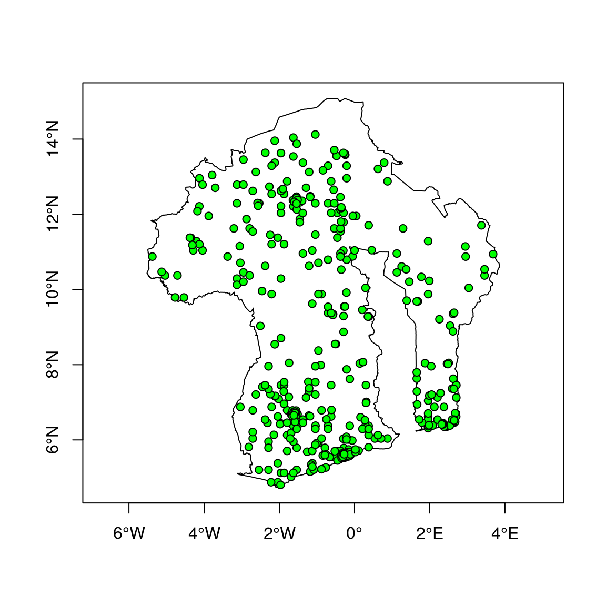
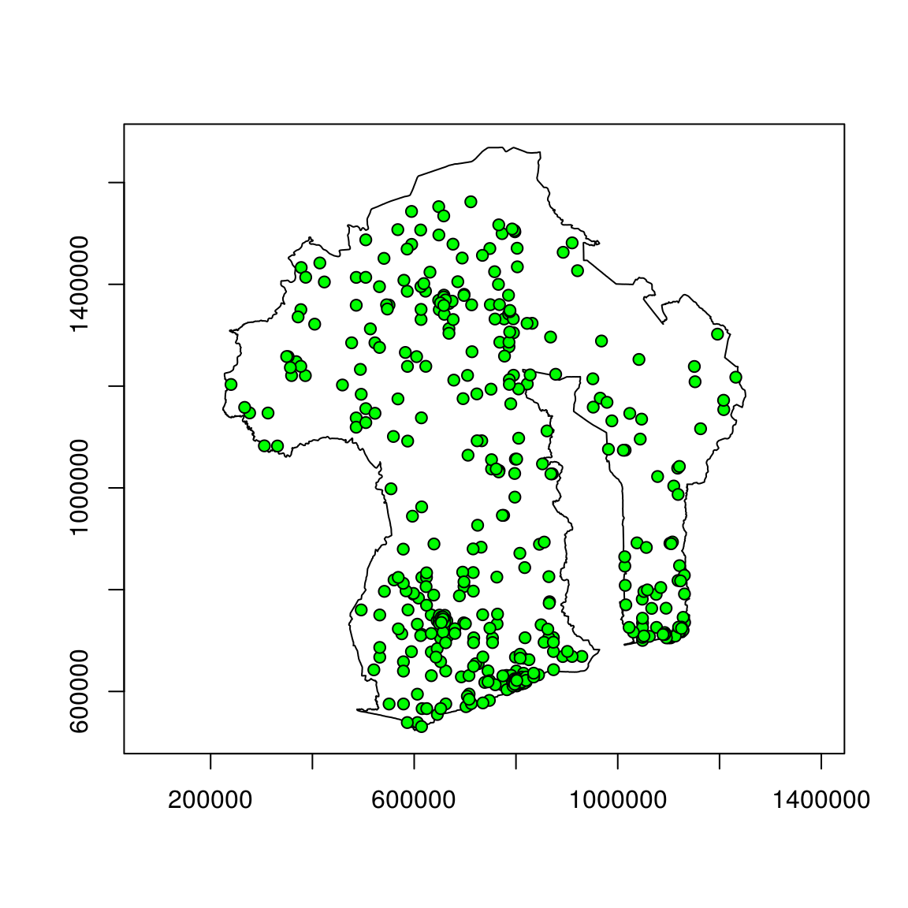
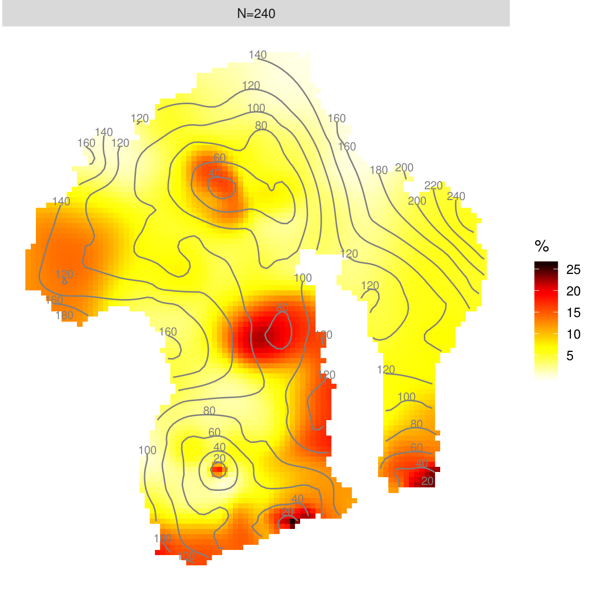
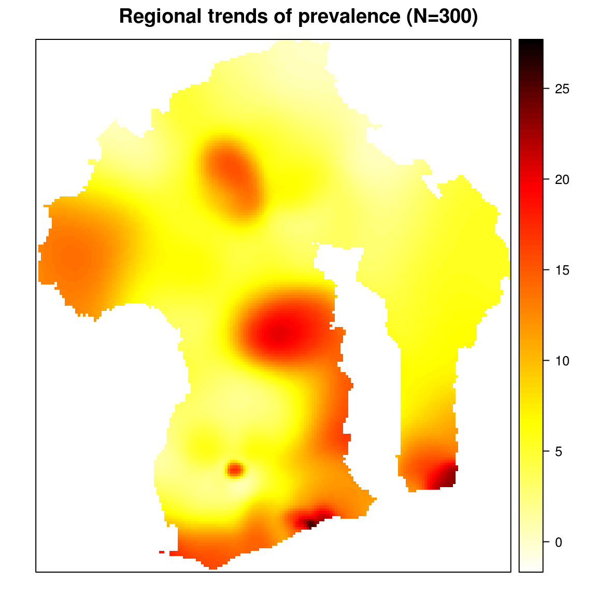
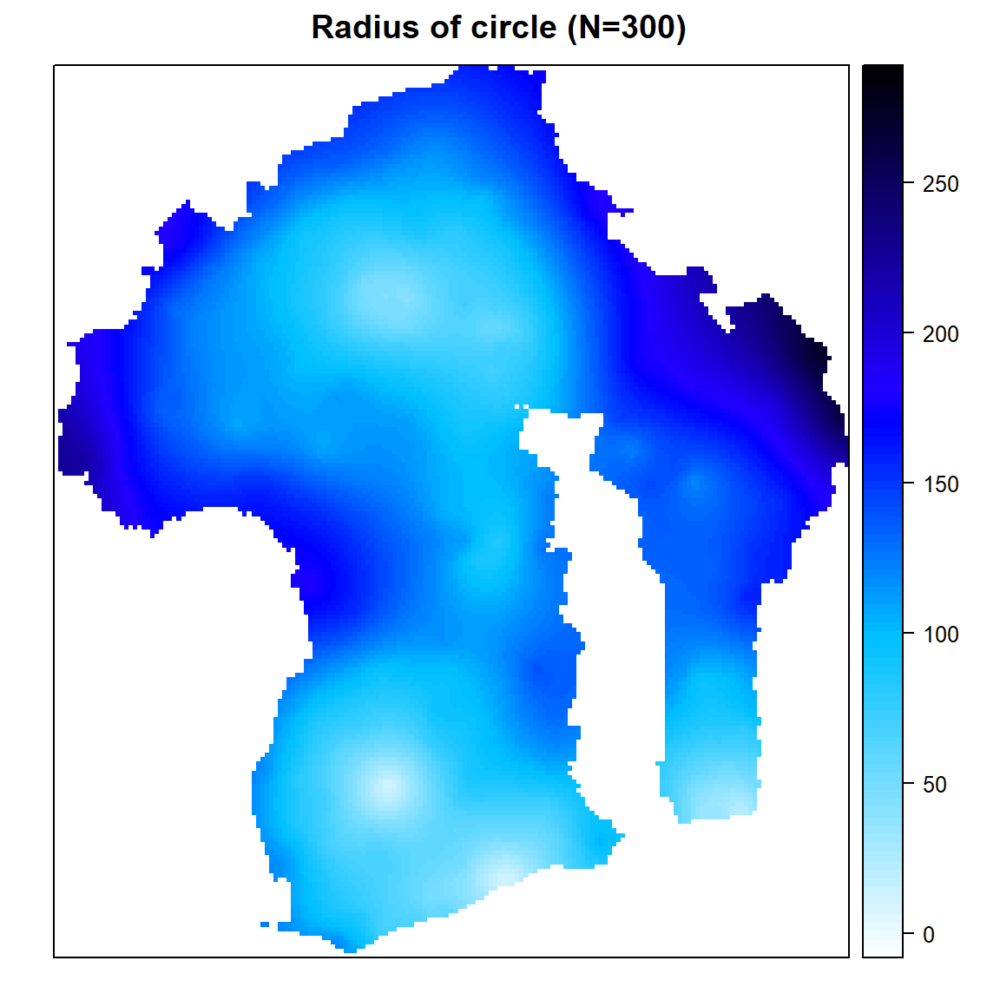
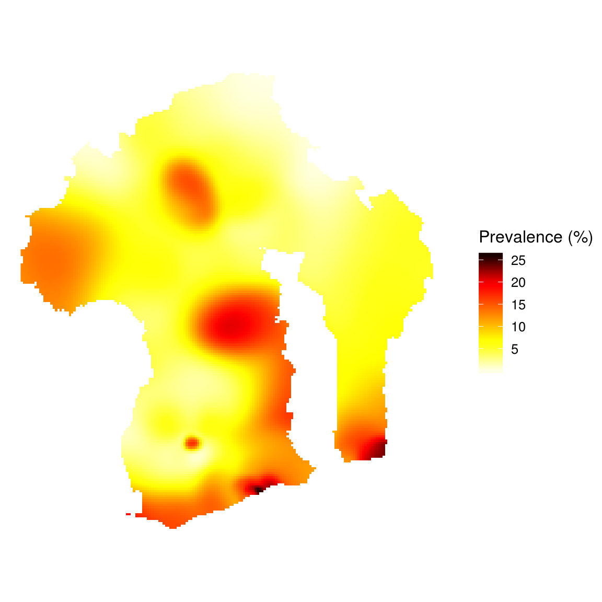

This package performs a methodological approach for spatial estimation of regional trends of a prevalence using data from surveys using a stratified two-stage sample design (as Demographic and Health Surveys). In these kind of surveys, positive and control cases are spatially positioned at the centre of their corresponding surveyed cluster.
This package provides functions to estimate a prevalence surface using a kernel estimator with adaptative bandwiths of equal number of persons surveyed (a variant of the nearest neighbour technique) or with fixed bandwiths. The prevalence surface could also be calculated using a spatial interpolation (kriging or inverse distance weighting) after a moving average smoothing based on circles of equal number of observed persons or circles of equal radius.
With the kernel estimator approach, it’s also possible to estimate a surface of relative risks.
The methodological approach has been described in:
- Larmarange Joseph, Vallo Roselyne, Yaro Seydou, Msellati Philippe and Meda Nicolas (2011) “Methods for mapping regional trends of HIV prevalence from Demographic and Health Surveys (DHS)”, Cybergeo: European Journal of Geography, no 558, http://cybergeo.revues.org/24606, DOI: 10.4000/cybergeo.24606
Application to generate HIV prevalence surfaces can be found at:
- Larmarange Joseph and Bendaud Victoria (2014) “HIV estimates at second subnational level from national population-based survey”, AIDS, n° 28, p. S469-S476, DOI: 10.1097/QAD.0000000000000480
Other papers using prevR could be found on Google Scholar.
Importing data
To create a prevR object, you need three elements:
- a data.frame with one row per survey cluster and containing the number of observations, the number of positive cases and coordinates of the cluster (you could optionnaly use weighted numbers)
- a vector identifying the columns of the data.frame containing the correspondant variables
- an optional
SpatialPolygonsdefining the studied area
## Registered S3 methods overwritten by 'ggplot2':
## method from
## [.quosures rlang
## c.quosures rlang
## print.quosures rlang## Registered S3 method overwritten by 'xts':
## method from
## as.zoo.xts zoo##
##
## Bienvenue dans 'prevR' : Estimation des tendances régionales d'une prévalence## - tapez help('prevR') pour les détails
## - tapez demo(prevR) pour une démonstration
## - tapez vignette('prevR-FR') pour la documentation en français
## - tapez citation('prevR') pour savoir comment citer prevR dans une publication.
##
## col <- c(id = "cluster", x = "x", y = "y", n = "n", pos = "pos", c.type = "residence", wn = "weighted.n", wpos = "weighted.pos")
dhs <- as.prevR(fdhs.clusters, col, fdhs.boundary)
str(dhs)## Formal class 'prevR' [package "prevR"] with 4 slots
## ..@ clusters:'data.frame': 401 obs. of 10 variables:
## .. ..$ id : int [1:401] 1 10 100 101 102 103 104 105 106 107 ...
## .. ..$ x : num [1:401] -1.21 -1.79 -2.29 -2.71 -1.96 ...
## .. ..$ y : num [1:401] 7.29 6.13 5.96 6.04 5.12 ...
## .. ..$ n : num [1:401] 23 22 22 28 21 21 11 24 23 15 ...
## .. ..$ pos : num [1:401] 0 0 0 0 3 4 0 1 0 0 ...
## .. ..$ c.type: Factor w/ 2 levels "Rural","Urban": 1 1 1 1 1 1 1 1 1 1 ...
## .. ..$ wn : num [1:401] 19.8 19.8 20.2 20.2 20.2 ...
## .. ..$ wpos : num [1:401] 0 0 0 0 2.88 ...
## .. ..$ prev : num [1:401] 0 0 0 0 14.3 ...
## .. ..$ wprev : num [1:401] 0 0 0 0 14.3 ...
## ..@ boundary:Formal class 'SpatialPolygons' [package "sp"] with 4 slots
## .. .. ..@ polygons :List of 1
## .. .. .. ..$ :Formal class 'Polygons' [package "sp"] with 5 slots
## .. .. .. .. .. ..@ Polygons :List of 1
## .. .. .. .. .. .. ..$ :Formal class 'Polygon' [package "sp"] with 5 slots
## .. .. .. .. .. .. .. .. ..@ labpt : num [1:2] -0.794 10.172
## .. .. .. .. .. .. .. .. ..@ area : num 51.9
## .. .. .. .. .. .. .. .. ..@ hole : logi FALSE
## .. .. .. .. .. .. .. .. ..@ ringDir: int 1
## .. .. .. .. .. .. .. .. ..@ coords : num [1:4056, 1:2] 1.28 1.25 1.23 1.22 1.22 ...
## .. .. .. .. .. ..@ plotOrder: int 1
## .. .. .. .. .. ..@ labpt : num [1:2] -0.794 10.172
## .. .. .. .. .. ..@ ID : chr "P1"
## .. .. .. .. .. ..@ area : num 51.9
## .. .. ..@ plotOrder : int 1
## .. .. ..@ bbox : num [1:2, 1:2] -5.52 4.74 3.85 15.08
## .. .. .. ..- attr(*, "dimnames")=List of 2
## .. .. .. .. ..$ : chr [1:2] "x" "y"
## .. .. .. .. ..$ : chr [1:2] "min" "max"
## .. .. ..@ proj4string:Formal class 'CRS' [package "sp"] with 1 slot
## .. .. .. .. ..@ projargs: chr "+proj=longlat +ellps=WGS84"
## ..@ proj :Formal class 'CRS' [package "sp"] with 1 slot
## .. .. ..@ projargs: chr "+proj=longlat +ellps=WGS84"
## ..@ rings : list()## Objet de classe 'prevR'## Nombre de clusters : 401## Nombre d'observations : 8000## Nombre de cas positifs : 810## Le jeu de données est pondéré.##
## Prévalence nationale : 10.12%## Prévalence nationale pondérée : 10.16%##
## Projection utilisée : +proj=longlat +ellps=WGS84##
## Domaine des cordonnées## min max
## x -5.37750 3.6850
## y 4.80326 14.1225##
## Domaine des coordonnées des frontières## min max
## x -5.518916 3.851701
## y 4.736723 15.082593An interactive helper function import.dhs() could be used to compute statistics per cluster and to generate the prevR object for those who downloaded individual files (SPSS format) and location of clusters (dbf format) from DHS website (https://dhsprogram.com/).
Boudaries of a specific country could be obtained with create.boundary().

Changing coordinates projection

## Objet de classe 'prevR'## Nombre de clusters : 401## Nombre d'observations : 8000## Nombre de cas positifs : 810## Le jeu de données est pondéré.##
## Prévalence nationale : 10.12%## Prévalence nationale pondérée : 10.16%##
## Projection utilisée : +proj=utm +zone=30 +ellps=WGS84 +datum=WGS84 +units=m +no_defs +towgs84=0,0,0##
## Domaine des cordonnées## min max
## x 240094.2 1231995
## y 531003.3 1562155##
## Domaine des coordonnées des frontières## min max
## x 224228.1 1251165
## y 523628.1 1669034
Quick analysis
Function quick.prevR() allows to perform a quick analysis:
- an optimal value of N will be computed with
Noptim() - adapative bandwiths will be calculted with
rings() - a prevalence surface will be computed with
kde() - the surface of rings radii will be generated with
krige() - a ggplot2 of the prevalence surface will be generated and rings radii will be added as a contour plot

Several values of N could be specified, and several options allows you to return detailed results.
res <- quick.prevR(fdhs, N = c(100, 200, 300), return.results = TRUE, return.plot = TRUE, plot.results = FALSE, progression = FALSE, nb.cells = 50)
res$plot
Step by step analysis
# Calculating rings of the same number of observations for different values of N
dhs <- rings(fdhs, N = c(100, 200, 300, 400, 500), progression = FALSE)
print(dhs)## Objet de classe 'prevR'## Nombre de clusters : 401## Nombre d'observations : 8000## Nombre de cas positifs : 810## Le jeu de données est pondéré.##
## Prévalence nationale : 10.12%## Prévalence nationale pondérée : 10.16%##
## Projection utilisée : +proj=longlat +ellps=WGS84##
## Domaine des cordonnées## min max
## x -5.37750 3.6850
## y 4.80326 14.1225##
## Domaine des coordonnées des frontières## min max
## x -5.518916 3.851701
## y 4.736723 15.082593##
## Couples (N,R) disponibles dans le slot 'rings' :## N R
## 100 Inf
## 200 Inf
## 300 Inf
## 400 Inf
## 500 Inf## Objet de classe 'prevR'## SLOT CLUSTERS## x y n pos
## Min. :-5.3775 Min. : 4.803 Min. : 8.00 Min. :0.00
## 1st Qu.:-1.7925 1st Qu.: 6.375 1st Qu.:17.00 1st Qu.:0.00
## Median :-0.7650 Median : 7.455 Median :20.00 Median :2.00
## Mean :-0.6605 Mean : 8.647 Mean :19.95 Mean :2.02
## 3rd Qu.: 0.1590 3rd Qu.:11.205 3rd Qu.:23.00 3rd Qu.:3.00
## Max. : 3.6850 Max. :14.123 Max. :31.00 Max. :9.00
## c.type wn wpos prev
## Rural:230 Min. :18.58 Min. :0.000 Min. : 0.000
## Urban:171 1st Qu.:19.84 1st Qu.:0.000 1st Qu.: 0.000
## Median :20.04 Median :1.544 Median : 7.692
## Mean :19.95 Mean :2.027 Mean :10.143
## 3rd Qu.:20.12 3rd Qu.:3.166 3rd Qu.:15.789
## Max. :21.76 Max. :8.806 Max. :43.750
## wprev
## Min. : 0.000
## 1st Qu.: 0.000
## Median : 7.692
## Mean :10.143
## 3rd Qu.:15.789
## Max. :43.750##
## SLOT RINGS POUR N=100 ET R=Inf## r.pos r.n r.prev r.radius
## Min. : 0.00 Min. :100.0 Min. : 0.000 Min. : 4.155
## 1st Qu.: 4.00 1st Qu.:105.0 1st Qu.: 4.000 1st Qu.: 23.046
## Median :11.00 Median :110.0 Median : 9.483 Median : 37.853
## Mean :11.63 Mean :110.7 Mean :10.550 Mean : 42.219
## 3rd Qu.:18.00 3rd Qu.:115.0 3rd Qu.:15.789 3rd Qu.: 57.861
## Max. :32.00 Max. :127.0 Max. :27.586 Max. :142.042
## r.clusters r.wpos r.wn r.wprev
## Min. :4.000 Min. : 0.000 Min. : 79.76 Min. : 0.000
## 1st Qu.:5.000 1st Qu.: 4.515 1st Qu.:100.25 1st Qu.: 3.895
## Median :6.000 Median :11.175 Median :118.70 Median : 9.551
## Mean :5.591 Mean :11.792 Mean :111.52 Mean :10.684
## 3rd Qu.:6.000 3rd Qu.:17.256 3rd Qu.:120.13 3rd Qu.:15.735
## Max. :7.000 Max. :33.937 Max. :140.88 Max. :28.210##
## SLOT RINGS POUR N=200 ET R=Inf## r.pos r.n r.prev r.radius
## Min. : 2.00 Min. :200.0 Min. : 0.8929 Min. : 7.171
## 1st Qu.: 9.00 1st Qu.:206.0 1st Qu.: 4.3902 1st Qu.: 37.579
## Median :22.00 Median :211.0 Median :10.2804 Median : 58.657
## Mean :22.55 Mean :210.8 Mean :10.7053 Mean : 64.005
## 3rd Qu.:33.00 3rd Qu.:216.0 3rd Qu.:15.4229 3rd Qu.: 89.381
## Max. :56.00 Max. :226.0 Max. :26.2136 Max. :231.980
## r.clusters r.wpos r.wn r.wprev
## Min. : 9.00 Min. : 2.47 Min. :175.0 Min. : 1.030
## 1st Qu.:10.00 1st Qu.:10.50 1st Qu.:199.8 1st Qu.: 4.563
## Median :11.00 Median :22.30 Median :217.3 Median :10.485
## Mean :10.53 Mean :22.66 Mean :210.0 Mean :10.824
## 3rd Qu.:11.00 3rd Qu.:31.98 3rd Qu.:220.0 3rd Qu.:15.797
## Max. :12.00 Max. :53.47 Max. :241.0 Max. :26.666##
## SLOT RINGS POUR N=300 ET R=Inf## r.pos r.n r.prev r.radius
## Min. : 5.00 Min. :300.0 Min. : 1.587 Min. : 9.971
## 1st Qu.:15.00 1st Qu.:304.0 1st Qu.: 4.983 1st Qu.: 45.750
## Median :32.00 Median :310.0 Median :10.559 Median : 73.931
## Mean :33.37 Mean :309.8 Mean :10.764 Mean : 79.767
## 3rd Qu.:47.00 3rd Qu.:315.0 3rd Qu.:15.142 3rd Qu.:108.783
## Max. :78.00 Max. :327.0 Max. :24.759 Max. :268.172
## r.clusters r.wpos r.wn r.wprev
## Min. :13.00 Min. : 4.284 Min. :260.6 Min. : 1.532
## 1st Qu.:15.00 1st Qu.:15.937 1st Qu.:299.2 1st Qu.: 5.080
## Median :15.00 Median :33.525 Median :301.8 Median :10.319
## Mean :15.44 Mean :33.297 Mean :307.9 Mean :10.853
## 3rd Qu.:16.00 3rd Qu.:46.856 3rd Qu.:320.0 3rd Qu.:15.429
## Max. :17.00 Max. :76.990 Max. :341.4 Max. :25.273##
## SLOT RINGS POUR N=400 ET R=Inf## r.pos r.n r.prev r.radius
## Min. : 8.00 Min. :400.0 Min. : 2.000 Min. : 12.70
## 1st Qu.:22.00 1st Qu.:405.0 1st Qu.: 5.327 1st Qu.: 54.42
## Median :44.00 Median :410.0 Median :10.602 Median : 85.41
## Mean :44.18 Mean :410.3 Mean :10.764 Mean : 94.79
## 3rd Qu.:58.00 3rd Qu.:415.0 3rd Qu.:14.217 3rd Qu.:127.73
## Max. :98.00 Max. :427.0 Max. :23.278 Max. :293.64
## r.clusters r.wpos r.wn r.wprev
## Min. :18.00 Min. : 8.229 Min. :360.1 Min. : 2.045
## 1st Qu.:20.00 1st Qu.:22.358 1st Qu.:399.9 1st Qu.: 5.345
## Median :21.00 Median :43.851 Median :415.4 Median :10.315
## Mean :20.54 Mean :44.298 Mean :409.6 Mean :10.851
## 3rd Qu.:21.00 3rd Qu.:58.963 3rd Qu.:421.0 3rd Qu.:14.341
## Max. :22.00 Max. :95.591 Max. :443.4 Max. :23.452##
## SLOT RINGS POUR N=500 ET R=Inf## r.pos r.n r.prev r.radius
## Min. : 14.00 Min. :500.0 Min. : 2.783 Min. : 16.38
## 1st Qu.: 31.00 1st Qu.:505.0 1st Qu.: 6.163 1st Qu.: 67.01
## Median : 54.00 Median :510.0 Median :10.700 Median : 98.47
## Mean : 55.24 Mean :510.3 Mean :10.811 Mean :107.68
## 3rd Qu.: 70.00 3rd Qu.:515.0 3rd Qu.:13.699 3rd Qu.:140.71
## Max. :116.00 Max. :528.0 Max. :22.612 Max. :347.09
## r.clusters r.wpos r.wn r.wprev
## Min. :23.00 Min. : 12.93 Min. :455.7 Min. : 2.499
## 1st Qu.:25.00 1st Qu.: 31.71 1st Qu.:499.5 1st Qu.: 6.138
## Median :26.00 Median : 51.91 Median :510.9 Median :10.222
## Mean :25.53 Mean : 55.12 Mean :509.3 Mean :10.869
## 3rd Qu.:26.00 3rd Qu.: 70.17 3rd Qu.:520.8 3rd Qu.:13.929
## Max. :28.00 Max. :110.78 Max. :555.8 Max. :22.822##
## QUANTILES DE r.radius (en kilomètres) :## 0% 10% 25% 50% 75% 80% 90% 95% 99%
## N100.RInf 4.15 7.84 23.05 37.85 57.86 62.99 79.63 93.12 121.77
## N200.RInf 7.17 14.58 37.58 58.66 89.38 94.40 114.97 134.81 173.37
## N300.RInf 9.97 18.75 45.75 73.93 108.78 114.65 138.17 159.10 211.31
## N400.RInf 12.70 31.42 54.42 85.41 127.73 136.67 163.91 177.11 241.44
## N500.RInf 16.38 41.15 67.01 98.47 140.71 156.53 181.92 201.87 286.18
## 100%
## N100.RInf 142.04
## N200.RInf 231.98
## N300.RInf 268.17
## N400.RInf 293.64
## N500.RInf 347.09# Prevalence surface for N=300
prev.N300 <- kde(dhs, N = 300, nb.cells = 200, progression = FALSE)
library(sp)
spplot(prev.N300, "k.wprev.N300.RInf", cuts = 100, col.regions = prevR.colors.red(101), main = "Regional trends of prevalence (N=300)")
## [using ordinary kriging]spplot(radius.N300, cuts = 100, col.regions = prevR.colors.blue(101), main = "Radius of circle (N=300)")
# ggplot2 graph
res <- as.data.frame(prev.N300)
res <- res[!is.na(res$k.wprev.N300.RInf), ]
library(ggplot2)
ggplot(data = res) +
aes(x = x, y = y, fill = k.wprev.N300.RInf) +
geom_raster() +
scale_fill_gradientn(colours=prevR.colors.red(20)) +
coord_fixed() +
theme_prevR_light() +
labs(fill = "Prevalence (%)")
Functions and methods provided by prevR
The content of prevR can be broken up as follows:
Datasets
-
fdhsis a fictive dataset used for testing the package. -
TMWorldBordersprovides national borders of every countries in the World and could be used to define the limits of the studied area.
Creating objects
prevR functions takes as input ojects of class prevR.
-
import.dhs()allows to import easily, through a step by step procedure, data from a DHS (Demographic and Health Surveys) downloaded from http://www.measuredhs.com. -
as.prevR()is a generic function to create an object of class prevR. -
create.boundary()could be used to select borders of a country and transfer them to as.prevR in order to define the studied area.
Data manipulation
- The method
changeproj()changes the projection of the spatial coordinates. - The method
as.data.frame()converts an object of class prevR into a data frame. - The method
export()export data and/or the studied area in a text file, a dbf file or a shapefile.
Data analysis
-
rings()calculates rings of equal number of observations and/or equal radius. -
kde()calculates a prevalence surface or a relative risks surface using gaussian kernel density estimators (kde) with adaptative bandwiths. -
krige()executes a spatial interpolation using an ordinary kriging. -
idw()executes a spatial interpolation using an inverse distance weighting (idw) technique.
Results visualisation and export
- Outputs of
kde(),krige()andidw()are objects of classSpatialPixelsDataFrame(sp package). - Results could be plotted using the function
spplot()from sp. - prevR provides several continuous color palettes (see
prevR.colors) compatible withspplot(). - Calculated surfaces could be export using the function
writeAsciiGrid()from maptools.